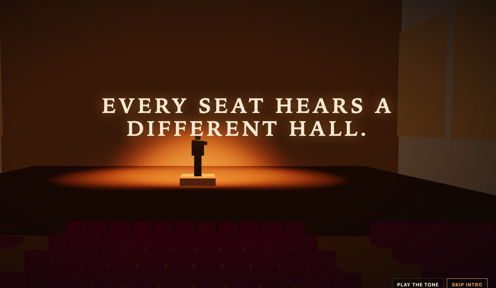
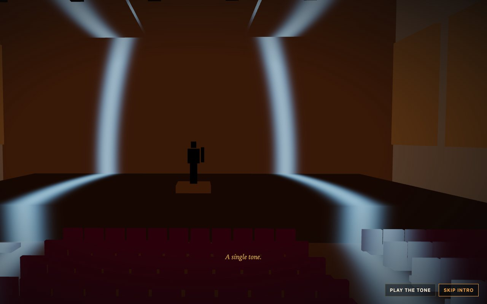
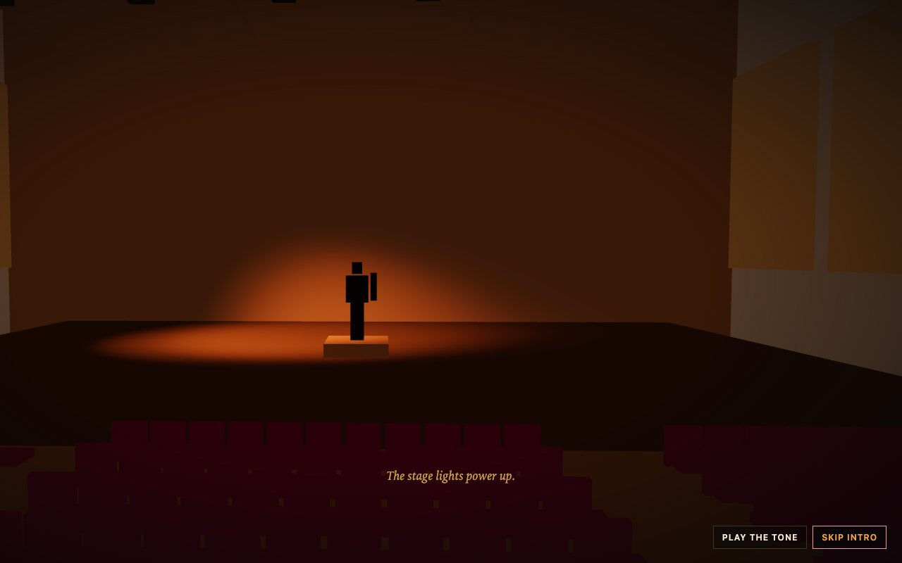
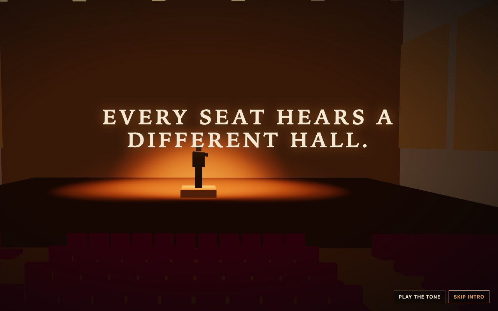
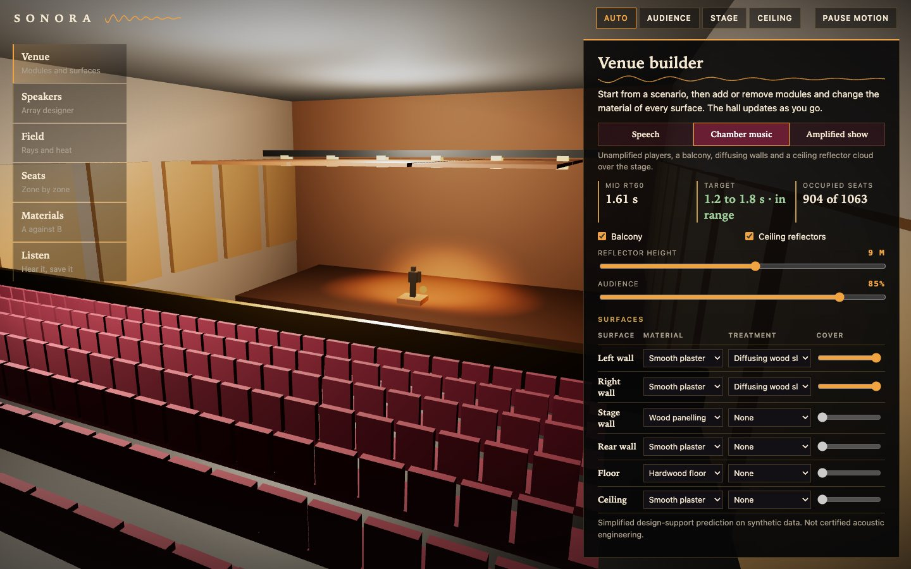
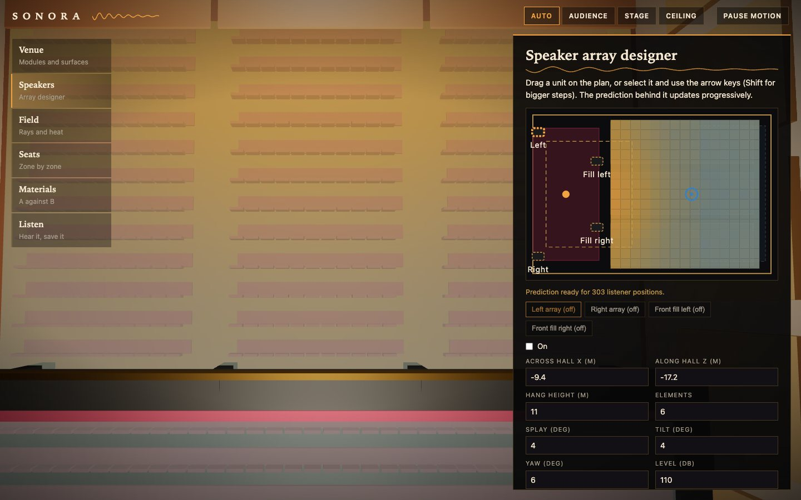
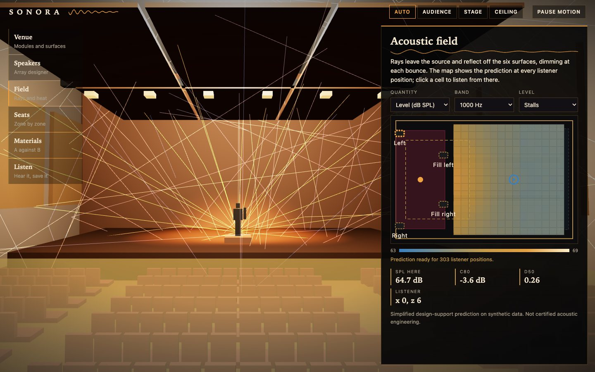
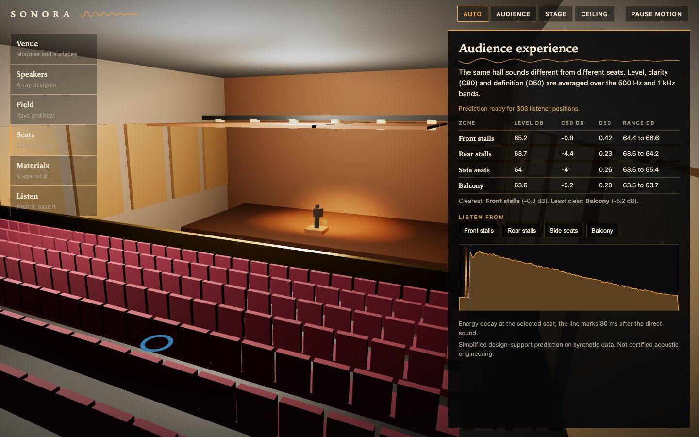
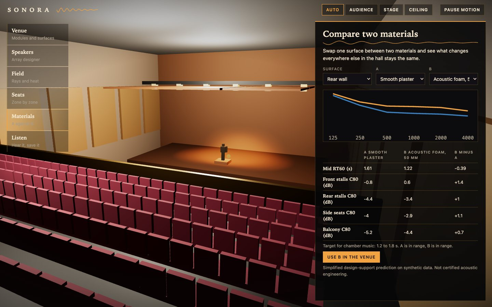
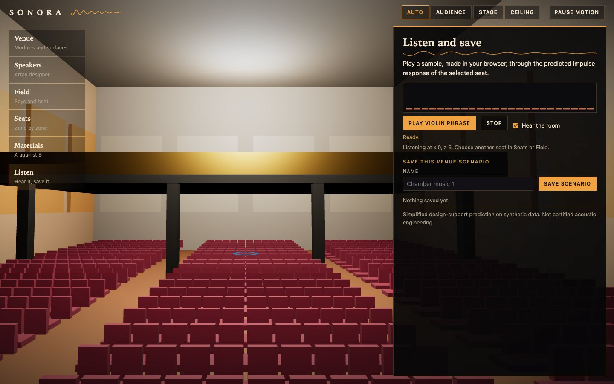

Blender · three.js · Web Audio · acoustics · 2026-10
Does the Back of the Hall Hear the Same Concert as the Front?
A spatial music venue designer on a scripted Blender hall, with the acoustics kept in a tested module: in the chamber-music preset the front stalls have a clarity (C80) of -0.8 dB and a definition (D50) of 0.42, the balcony -5.2 dB and 0.20. Foam on the rear wall takes the mid-frequency reverberation from 1.61 to 1.22 s. A sound wave reveals the hall in the intro; a conductor's first beat opens the planner.

Built from blueprint 07 of a written build book (Advanced Engineering Build Book, Volume VII) as one vertical slice. The venue, its materials, the speakers and the audience are synthetic, and the prediction is simplified design support, not certified acoustic engineering. Absorption coefficients are of the order found in textbook tables and the preset targets are typical guidance ranges. The prediction is checked against the physics it implements, not against measurements of a real hall. Not built: PostgreSQL and object storage, measured coefficients, non-shoebox geometry, spatial (HRTF) audio, a WASM ray engine, touch testing beyond a phone layout, and a measurement on a physical GPU. The intro's tone plays only if the visitor presses a button, because browsers block autoplay. The twelve agent roles are committed as Claude Code configuration, but this repository was produced by one session playing them in sequence, not by parallel subagents.
01 — The problem
Acoustic design tools tend to show a table of numbers or a heat map with no hall around it. The question here is how much a person can learn by moving things: drag a speaker array and watch the level across the audience settle again, swap one wall's material and see which seats gain clarity, then play a sound through the seat they picked.
The book's rule for this volume is that Blender owns the shape and the browser owns the behaviour, so the hall kit has to promise stable names, hinge pivots and measured bounds, and the acoustic model has to stay separate from the picture so it can be tested.
02 — What I built
One repository with the asset pipeline, the acoustics and the planner.
- A scripted hall kit: 69 named parts (shell, stage, four seat blocks with 1,063 seats, a balcony, 20 wall panels, 6 ceiling reflectors, 4 speaker units, 6 stage lights, a conductor, an analysis proxy), 14,424 triangles in 770 KB (80 KB gzipped), re-imported and checked by a validator.
- An acoustics module: octave-band absorption and scattering, Eyring reverberation time, an image-source sum for the early sound, a statistical late field, a finite ceiling reflector cloud, clarity and definition per seat, rays and a synthetic impulse response.
- Six views: venue builder, speaker designer on a plan, field with rays and heat, seat zones, material comparison, and listening with saved scenarios.
- An API with the book's five endpoints, idempotency keys and paging.
03 — How it was built
- 01
Early sound by image sources
In a shoebox hall every reflection has a mirror-image source. The module sums the exact paths up to six reflections, each attenuated by the walls it touched (octave band by octave band), the air and the distance, with the speaker's directivity mirrored along with the image. Everything arriving within 80 ms of the direct sound is early; the rest is replaced by a statistical reverberant term from the Eyring reverberation time.
early = direct + sum(image_k) // arrives within 80 ms C80 = 10 log10(early / late) - 02
Checks that can fail
Level falls 6 dB per doubling of distance in a heavily absorbed hall; two identical sources at one point add 3 dB; the field is mirror-symmetric when the hall and speakers are; making a wall diffusing moves energy from early to late without changing the total; the ceiling reflectors raise clarity in the front stalls and leave the reverberation time alone; each preset's mid-frequency reverberation lands in its scenario's target range (0.82 s speech, 1.61 s chamber, 1.09 s show).
- 03
A prediction that fills in
The 303 listener positions are predicted in chunks of 48, and a new edit cancels the previous run, so dragging a speaker keeps the interface responsive and the map fills in behind the cursor. In the browser an edit to a finished prediction took 110 to 133 ms in the test run.
- 04
A hall revealed by a sound wave
The intro's wavefront is a single radius that every hall material reads in its shader, measured from the source and from its six first-order wall images. Where the front, or a reflection, touches a surface, the surface lights up in amber or blue and stays visible. The same camera rig then moves from the stalls into the editor pose on the conductor's first beat.
- 05
What the validator caught
The first export put two wall panels through the end wall and dropped the stage lights from the file. A fresh-scene re-import found both: every named part, every pivot, the envelope and the seat counts are checked against the contract. Later, a keyboard test showed that moving a speaker with the arrow keys read a stale position and moved only once per render; the move now reads the current state.
04 — Results
The intro: a sound wave reveals the hall, the stage lights come up, a conductor raises a hand.



The planner:






The numbers. Chamber-music preset: mid-frequency reverberation 1.61 s (target 1.2 to 1.8). Front stalls C80 -0.8 dB, D50 0.42; rear stalls -4.4 dB, 0.23; balcony -5.2 dB, 0.20. Foam on the rear wall: 1.61 to 1.22 s, rear stalls -4.4 to -3.4 dB, balcony -5.2 to -4.4 dB. The ceiling reflector cloud raises front-stalls clarity from -1.3 to -0.8 dB. Speech preset 0.82 s (target 0.5 to 1.0); amplified show 1.09 s (target 0.8 to 1.3).
Checks. 31 unit and API tests, 25 Playwright tests that passed three times in a row after the last fix, a clean typecheck. They cover the demo script, a pointer drag and a keyboard move of a speaker, saved scenarios across a reload, modules changing the hall, reduced motion, graphics failure, context loss, no Web Audio, a phone width and six visual-regression states.
Performance, measured on an Apple M3 Pro with software WebGL, not a GPU. 42 draw calls and 14,540 triangles in the field view, 998 KB transferred, a 4.6 s largest contentful paint and a median 66.6 ms frame; there is no 60 fps claim here.
05 — What I'd do next
- Measure on a physical GPU and a phone, and decode the model off the main thread.
- Compare the prediction with published measurements of a real hall and publish the error.
- Support fan-shaped and curved halls with a ray-tracing engine (WASM or Rust).
- Add binaural rendering so the listening view uses head-related transfer functions.